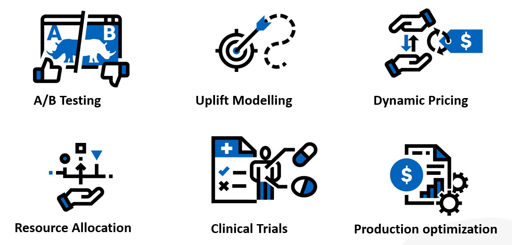

Trainings in Causal Machine Learning with DoubleML
Join our trainings to get started with Causal Machine Learning. Our courses are open to data scientists from industry and academia at all technical levels.
- Check out our upcoming classes!
About the Course
We offer an intensive two-day training on Causal Machine Learning with DoubleML for data scientists at all technical levels. On Day 1, we will start with the basics of Causality and Causal Machine Learning and introduce you to the fundamentals of Double Machine Learning. On Day 2, we cover more advanced topics of Causal Machine Learning, including more elaborate causal models, quasi-experimental approaches like Difference-in-Differences, and Sensitivity Analysis.
Each day provides:
- An introduction to the theoretical basis of Causal/Double Machine Learning
- Hands-on sessions based on real-data use cases
- Dedicated Q&A sessions
Our classes are taught by members of the DoubleML developer team and organized by Economic AI.
Small Classes, Big Impact
We teach our classes to small groups. We currently accept 20 registrations for each workshop. Moreover, in our hands-on sessions, we make sure that there are study groups of at most 7 participants managed by one instructor. In dedicated sessions, you will have planty of time to ask questions and discuss open points.
Learn from the People behind the DoubleML Library
Learn from the members of the core DoubleML developer team. Our classess are offered in collaboration with our partners from EconomicAI. Economic AI is a start-up that has specialized in transferring Causal Machine Learning approaches to industry use cases. Find out more about our instructors.
Topics Covered
The will cover the following topics:
Day 1: Basics of Causal ML
- Basics of Causality and Causal Machine Learning
- Introduction to Double Machine Learning
- Hands-on Sessions and Q&A in small groups (max. 7 persons)
Day 2: Advanced Topics
- Overview: Causal Models and Extensions
- DoubleML for Difference-in-Differences
- Sensitivity Analysis with DoubleML
- Hands-on Sessions and Q&A in small groups (max. 7 persons)
Hands-on Sessions and Data Examples

Participants will gain practical experience with Double Machine Learning in dedicated hands-on sessions with topics from various domains (see examples above).
Full Access to Resources
All teaching materials will be shared during and after the workshop, including slides and Python notebooks from the hands-on sessions.
Why Causal Machine Learning?
Machine Learning has revolutionized the world. In most cases, ML method have been used for prediction purposes. However, the most important questions are causal. Managers wonder if a certain service is profitable or not, whether certain production processes improve the quality of the final product and how to optimally allocate resources. Causal Machine Learning makes it possible to combine the predictive power of ML algorithms with causal modelling.
What is Double Machine Learning?
Double Machine Learning is a general approach to Causal Machine Learning. In short, all ML algorithms introduce some form of regularization in order to handle complex or high-dimensional data. Double Machine Learning explicitly addresses the consequences of such a regularization in the context of causal inference. It is based on three key ingredients:
- Neyman Orthogonality
- High-Quality ML Learners
- Sample Splitting (a.k.a. Cross-Fitting)
As a result, Double Machine Learning offers inference procedures like valid statistical tests based on estimation with ML.
Curious? Check out the upcoming classes and join our trainings to learn more!
Questions?
If you have questions, have a look at our FAQs or contact us via trainings@economicai.com.